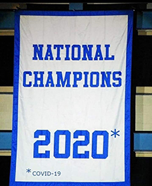

Kansas Basketball 2020 National Champions
The Real Story
Your 2020 National Champions
This website will give reasons why Kansas should have won the National Championship in 2008, cancelled because of the coronavirus, as well as a history lesson as to why all history of college basketball starts with the University of Kansas.
History of Kansas Basketball
James Naismith was the inventor of basketball, and was Kansas' first head basketball coach.
Forrest Clare "Phog" Allen is known as the "Father of Basketball Coaching." He coached at Kansas from 1907–1909 then again from 1919–1956
Under his tutelage, many of the most noteable coaches played under him. Of note: Dean Smith and Adolph Rupp played for James Naismith.
Kansas' current arena Allen Fieldhouse is named for "Phog" Allen.
Great quote about why Kansas is special
"There's no better place to coach, there's no better place to go to school, there's no better place to play (than Kansas)." — Larry Brown
Traditions
What makes Kansas the best is the tradition, this includes the singing of the Alma Mater as well as the Rock Chalk Chant.
The Alma Mater and The Rock Chalk Chant video
The Alma Mater audio
Lyrics to the Alma Mater
"Far above the golden valleyGlorious to view,
Stands our noble Alma Mater,
Towering toward the blue.
CHORUS:
Lift the chorus ever onward,
Crimson and the blue
Hail to thee, our Alma Mater
Hail to old KU."